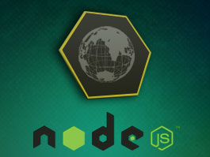

Node.jsAbout Node.jsNode.js is an open source, cross-platform runtime environment for server-side and networking applications. Node.js applications are written in JavaScript, and can be run within the Node.js runtime on OS X, Microsoft Windows, Linux, FreeBSD, NonStop and IBM i. Node.js provides an event-driven architecture and a non-blocking I/O API that optimizes an application's throughput and scalability. These technologies are commonly used for real-time web applications. Node.js uses the Google V8 JavaScript engine to execute code, and a large percentage of the basic modules are written in JavaScript. Node.js contains a built-in library to allow applications to act as a Web server without software such as Apache HTTP Server or IIS. Node.js is gaining adoption as a server-side platform. OverviewNode.js allows the creation of web servers and networking tools, using JavaScript and a collection of "modules" that handle various core functionality. Modules handle File system I/O, Networking (HTTP, TCP, UDP, DNS, or TLS/SSL), Binary data (buffers), Cryptography functions, Data streams, and other core functions. Node's modules have a simple and elegant API, reducing the complexity of writing server applications. Frameworks can be used to accelerate the development of applications, and common frameworks are Express.js, Socket.io and Connect. Node.js applications can run on Microsoft Windows, Unix and Mac OS X servers. Node.js applications can alternatively be written with CoffeeScript (a more readable form of JavaScript), Microsoft TypeScript (a strongly-typed form of JavaScript), or any language that can compile to JavaScript. Node.js is primarily used to build network programs such as web servers, making it similar to PHP and Python. The biggest difference between PHP and Node.js is that PHP is a blocking language (commands execute only after the previous command has completed), while Node.js is a non-blocking language (commands execute in parallel, and use callbacks to signal completion).  Click on the Image to view the complete Node.js Tutorial |